Global Shapers Community
Jeddah Hub
From Jeddah to the Globe من جدة إلى العالم
The hub's bilingual website and member dashboard: initiatives, Hub Activities, news and the Community Charter.
Next.js 16React 19FirebaseVercelEnglish · العربية

Global Shapers Community
From Jeddah to the Globe من جدة إلى العالم
The hub's bilingual website and member dashboard: initiatives, Hub Activities, news and the Community Charter.